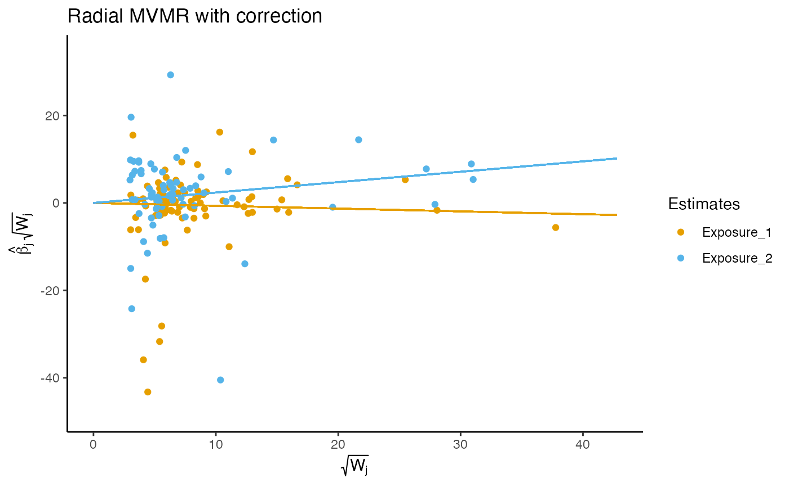

Calculates Q-statistics quantifying instrument strength. Each exposure is treated as an outcome sequentially, fitting the remaining
exposures within a radial MVMR model. High Q-statistics indicate a high instrument strength, comparable to the Q_x statistic in conventional
MVMR analyses. The function outputs a list of plots, global Q-statistics, and individual Q-contributions indexed by the exposure number ordered
using the format_rmvmr function. Named exposures in each list refer to the remaining exposures in the strength RMVMR model.
Arguments
- r_input
A formatted data frame using the
format_rmvmrfunction or an object of classMRMVInputfromMendelianRandomization::mr_mvinput- gencov
Calculating heterogeneity statistics using the
MVMRpackage requires the covariance between the effect of the genetic variants on each exposure to be known. This can either be estimated from individual level data, be assumed to be zero, or fixed at zero using non-overlapping samples of each exposure GWAS. A value of 0 is used by default.
Value
An object of class "S_RMVMR" containing the following components:
plotA list containing plots for RMVMR analyses regressing each exposure sequentially upon remaining exposures in the
r_inputobject. Plots are indexed by the exposure number serving as the outcome for the RMVMR analysisqstatA list containing global Q-statistics for RMVMR analyses regressing each exposure sequentially upon remaining exposures in the
r_inputobject. Indexing follows that ofplotsand p-values for global heterogeneity are providedqallA list containing the individual Q-statistics and data for RMVMR analyses regressing each exposure sequentially upon remaining exposures in the
r_inputobject. Indexing follows that ofplots
References
Spiller, W., et al., Estimating and visualising multivariable Mendelian randomization analyses within a radial framework. Forthcoming.
Examples
f.data <- format_rmvmr(
BXGs = rawdat_rmvmr[,c("ldl_beta","hdl_beta","tg_beta")],
BYG = rawdat_rmvmr$sbp_beta,
seBXGs = rawdat_rmvmr[,c("ldl_se","hdl_se","tg_se")],
seBYG = rawdat_rmvmr$sbp_se,
RSID = rawdat_rmvmr$snp)
output <- strength_rmvmr(f.data)
#> Warning: Covariance between effect of genetic variants on each exposure not specified. Fixing covariance at 0.
#> Warning: Covariance between effect of genetic variants on each exposure not specified. Fixing covariance at 0.
# The following shows the strength plot and Q statistics for exposure 2,
# regressing exposure 2 upon exposures 1 and 3 (which are labeled exposure 1
# and exposure 2 based on ordering in the RMVMR model).
output$plot[[2]]

output$qstat[[2]]
#> q_statistic p_value
#> Exposure_1 1377.211 6.618994e-230
#> Exposure_2 1057.544 8.171778e-177